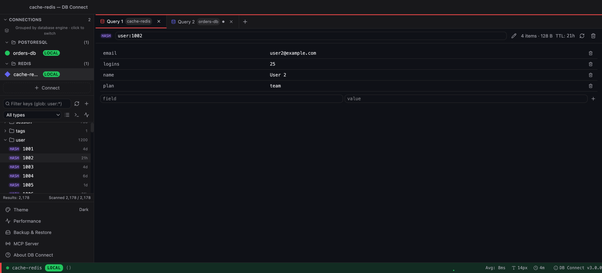

Both are free. Redis Insight is Redis Ltd's official GUI with first-class support for Redis modules. DB Connect is a native Redis GUI with memory analysis and guarded bulk deletes — in the same app as your SQL databases.

| Feature | DB Connect | RedisInsight |
|---|---|---|
| Price | Free | Free |
| Maker | Independent developer | Redis Ltd |
| Platforms | macOS (universal), Windows x64 | Windows, macOS, Linux; also Docker |
| Runtime | Native (Go + Wails), ~35 MB | Electron desktop app |
| Engines | Redis, MySQL/MariaDB, PostgreSQL, Redshift, DynamoDB, MongoDB, Elasticsearch/OpenSearch | Redis |
| Standalone, Cluster, Sentinel | Yes | Yes |
| Key browser with namespace folders | Yes | Yes |
| Per-type editors and TTL | Yes | Yes |
| Memory analysis | Yes — memory by TTL, top namespaces, keys by type | Yes — database analysis with recommendations |
| Slow log, command console | Yes | Yes |
| Profiler, Pub/Sub, Streams consumer groups | Not built in | Yes |
| Module data (JSON, Search & Query, TimeSeries) | Core data types only | Dedicated views |
| Delete keys by pattern | Yes — dry run first | Bulk actions |
| Production confirmation gates, read-only connections | Yes | Not built in |
Redis Insight details as of 2026 — check redis.io/insight for the current feature list.
Dedicated views for JSON documents, Search & Query indexes and TimeSeries data. DB Connect's editors cover the core data types only.
Watch commands live, subscribe to channels and inspect stream consumer groups — tooling DB Connect does not have.
Tracks new Redis features closely, ships guided tutorials and works with Redis Cloud databases.
Runs on Linux or as a container you open in a browser. DB Connect is macOS and Windows only for now.
Check the cache and the source of truth side by side: PostgreSQL, MySQL/MariaDB, Redshift, DynamoDB, MongoDB and Elasticsearch/OpenSearch live in the same window and connection list.
Delete-by-pattern lists exactly which keys match before anything is removed, and production-tagged connections ask for confirmation. Read-only connections block writes entirely.
Memory by TTL, top namespaces and keys by type — quick to spot keys with no expiry eating memory. Slow log and a console with replies rendered by type.
A ~35 MB native app (Go + Wails), not Electron. No account, no telemetry; credentials are AES-256-GCM encrypted with the key in your OS keychain.
An optional assistant using your own Anthropic API key (rows never sent by default, never from production), and a local MCP server so Claude Code, Claude Desktop or Cursor can query allow-listed connections.
Redis is your main database, you rely on modules such as JSON, Search or TimeSeries, you need the profiler, Pub/Sub or Streams tooling, or you work on Linux or with Redis Cloud.
Redis is one part of a stack that also includes SQL or DynamoDB/MongoDB, and you want one native app with memory analysis, dry-run pattern deletes and production gates.
See also: DB Connect as a Redis GUI
Yes. DB Connect is a free native Redis GUI for macOS and Windows with a key browser, per-type editors, TTL, memory analysis, slow log and a console. It also connects to MySQL/MariaDB, PostgreSQL, Redshift, DynamoDB, MongoDB and Elasticsearch/OpenSearch.
DB Connect is built with Go and Wails, using the operating system's own web view instead of a bundled browser, and is about 35 MB.
Yes. Standalone, cluster and sentinel deployments are supported, and cluster mode is detected automatically.
In DB Connect, delete-by-pattern runs as a dry run first and shows the matching keys before anything is removed. Production-tagged connections ask for confirmation and read-only connections refuse the delete.
Not with dedicated views. DB Connect's editors cover the core Redis data types; if you work heavily with JSON documents or Search indexes, Redis Insight is the better tool for that.
Yes, if you allow it. DB Connect's local MCP server is off by default, listens on localhost only, needs a per-install token and only reaches connections you allow-list. Claude Code, Claude Desktop or Cursor can scan keys by pattern, read a key's value and TTL, read server INFO and run read-only commands; writes need a time-bounded grant you make in the desktop app.
Free for personal and commercial use. No account required.
macOS 11.0 (Big Sur) or later
Intel & Apple Silicon
xattr -cr /Applications/DBConnect.app
Prefer Homebrew? brew install --cask shubhesh07/db-connect/db-connect